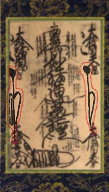

On either side of the Omandala Gohonzon are the Bija (seed syllables) representing Aizen and Fudo Myo-o. These protective deities come from the esoteric form of Buddhism. Both have vowed to help those who fall into evil states by cutting away the illusions and exposing earthly desires.
Aizen Myo-o (Jpn.); Ragaraja Vidyaraja (Skt.); Desire King Knowledge King
The Bija (seed syllable; specialized Sanskrit letter) for Aizen Myo-o is called Hum and is written on the left hand side of the Gohonzon.
Fudo Myo-o (Jpn.); Achalanatha Vidyaraja (Skt.); Immovable Lord Knowledge King
The Bija (seed syllable; specialized Sanskrit letter) for Fudo Myo-o is called Vam and is written on the right hand side of the Gohonzon.